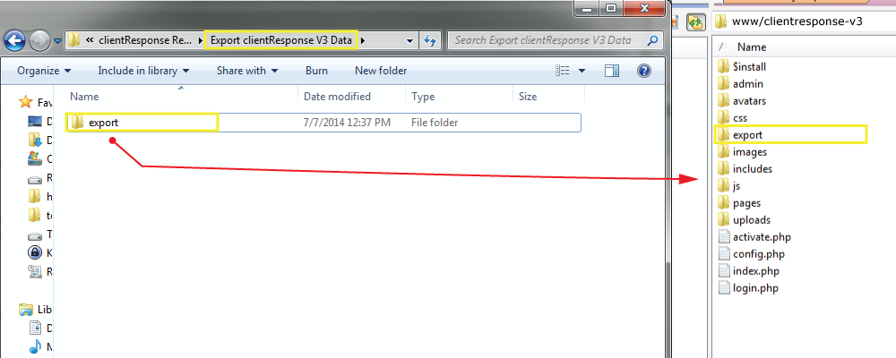

Versi Saat ini: 4.1Nopember 2015
Terima kasih telah menggunakan clientResponse.
Jika Anda mempunyai pertanyaan diluar penjelasan berikut ini, jangan ragu utk kirim email pada saya Agung Hario.
Saya dengan senang hati menjawab pertanyaan yang berhubungan dengan produk ini.
clientResponse sangat mudah di install, setup dan digunakan untuk manajemen client dan sebagai alat komunikasi antara Anda dengan client Anda, aplikasi ini menggunakan web application, dibangun dengan HTML & CSS, PHP/MySQLi dan jQuery.
Sebelum kita mulai
Silahkan membaca semua dokumentasi ini hingga habis SEBELUM mencoba meng-installnya, atau EXPORT/IMPORT Data. Jika Anda berencana untuk meng-export data dari versi sebelumnya (V.3),
JANGAN men-delete apapun pada instalasi versi lama sampai selesai export/import data Anda, dan sudah Anda cek semua. Lakukanlah backup semuanya baik aplikasi maupun data sebelum Anda melakukan perubahan.
Pada versi ini, Saya ingin menambahkan cara bagaimana cara import data dari versi sebelumnya (assumsi V.3)
ke versi V.4.1. Sebenarnya sederhana, tetapi saya pikir cara ini adalah yang terbaik. Yang perlu dipikirkan adalah bahwa Anda hanya dapat mengimport dengan type data yang terbatas,
Terutama Clients, Projects, Project Payments and Admins/Managers.
Cara Export dan Import data Anda akan dijelaskan detail pada dokumentasi ini.
Saya ucapkan banyak terima kasih pada semua yang telah memakai produk ini. You guys are just Awesome. =)
A. Pra-installation Top
1. Unzip clientResponse.
Unzip clientResponse file dan perhatikan file structure. Anda harus mendapatkan 10 folders dan 3 file.
2. Ciptakan Database.
Langkah pertama adalah menciptakan database MySQL. Proses berikut menjelaskan detail pada kebanyakan website dan web hosting.
Ketika Anda pada tahap setup database ,Anda perlu memasukkan informasi:
The hostname - Biasanya (tetapi tidak selalu) 'localhost'
The database name - contoh :clientResponse
The database username - contoh: database_user
The database password - contoh: database_password
3. Meng-upload clientResponse
Uploadlah semua file, lalu lakukan unzip pada web hosting Anda, pastikan file dalam keadaan utuh.
Pastikan untuk chmod avatars, uploads dan admin/templates folders ke 755
Anda seharusnya telah menciptakan folders/file berikut pada akun host Anda:
B. Instalasi Top
Lakukan dengan Online Setup Wizard
Proses Instalasi sangat mudah dan hanya memerlukan beberapa menit saja.
Setelah selesai proses uploading, pergi ke http://www.situsanda.com/clientresponse/ (atau apa saja subfolder dimana Anda meng-upload-nya) dan ikut instruksi pada layar.
Biarkan saja sebagai default dan berikan informasi yang spesifik jika diperlukan.
1. Periksa Konfigurasi Server
clientResponse (WAJIB) menggunakan PHP 5.x & koneksi MySQLi, dan mcrypt_encrypt / mcrypt_decrypt.
Berikut Cek Konfigurasi Server yang akan tampak sebelum Anda bisa melanjutkan proses instalasi. Jika semuanya sudah tercentant dan ok lanjutkan dengan menekan button "Start the Installation".
Jika Tidak, Anda tidak akan pernah melihat tombol "Start the Installation" dan tidak akan bisa melanjutkan proses instalasi. Minta tolong pada web hosting Anda jika sesuatu terjadi kesalahan.

2. Konfigurasi Database & Time Zone
clientResponse memerlukan koneksi MySQLi.
Setelah Anda memasukkan informasi mengenai database, klik pada "On to Step 2" button.
Jika terjadi error pada proses ini, kosongkan database dan juga semua table yang telah tercipta sebelumnya, delete file config.php dari folder dimana Anda upload clientResponse to, dan coba lakukan sekali lagi (ulang proses dari awal).
Jika semua konfigurasi benar maka Anda akan hal berikut:
3. Setting clientResponse Settings
4. Akun Primer Admin
Administrator adalah "Superuser". Akun Admin tidak bisa dihapus.
Ketika Selesai mengisi informasi mengenai Akun Admin klik tombol "Complete Install" untuk menyelesaikan proses instalasi.
Untuk Alasan keamanan , DELETE atau UBAH NAMA folder "install".
C. Data Export dari versi V.3 Top

2. Export Data Anda
D. Meng- Import Data clientResponse V.3 Top
1. Start Importing Your Data
Ketika data berhasil di-import akan terlihat pesan :
.
E. Setting Situs Top
1. Setting Umum
Setting Situs terbagi menjadi 3 bagian yang berbeda.
A. Setting Situs Global
-
Digunakan dalam notifikasi email dan upload. HARUS menyertakan slash.Installation URL
-
Pilih bahasa. File bahasa Indonesia diperlukan untuk menerjemahkan English.Localization
-
Pilih No untuk menolak user anonymous. pilih Enable untuk Self-Registrationser
-
contoh : clientResponse (Akan tampak pada atas browser, header dan footer).Site Name
-
Tampil pada Invoice dan beberapa area pada web.Business Name
-
Alamat bisnis Anda. (Tampak pada Invoice client serta halaman pembayaran)Business Address
-
Digunakan pada email notifikasi "from/reply to" alamat email.Business Email
-
Nomor Telephone dimana client dapat menghubungi Anda.Business Phone
B. Avatar & Setting Upload
C. Setting Pembayaran Client
2. File Localization
aplikasi ini sudah siap untuk diterjemahkan dalam segala bahasa. Semua file Localization diletakkan pada dua folder, yaitu: sisi client adalah folder /language dan sisi Admin adalah /admin/language. Jika bahasa Indonesia belum terlihat pada folder, Anda dapat menggunakan file yang lain. Kemudian terjemahkan sendiri dengan bahasa yang Anda inginkan
Situs Setting.
file bahasa yang bisa Anda gunakan untuk menerjemahkan .
F. Settingan Lanjut — Style & Images Top
1. Merubah Style
Meskipun aplikasi ini sudah modern serta menggunakan Bootstrap Twitter Versi 3.1.1, tapi mungkin Anda tetap ingin merubahnya. Hal ini sangat mudah, namun, diperlukan sedikit skill mengenai HTML/CSS. Untuk yang sudah berpengalaman sangatlah mudah, yaitu dengan meng-edit default file CSS yang bernama "clientresponse.css" dan "custom.css". Jangan lupa menempatkan pada folder utama dan folder pages.
2. Gambar/Logo
aplikasi ini menggunakan logo ukuran 400px x 31px. log pada header ketika login berukuran 258px x 20px.
Icon & Gambar dapat diubah sesuai selera Anda.
G. Help & Support Top
Sekali lagi jika ada pertanyaan atau issu apapaun mengenai software ini jangan ragu untuk menghubungi saya Agung Hario.
Saya menyediakan support 24 jam dengan memonitor email saya.
Saya sangat bahagia mendengar segala feedback dari Anda untuk membuat aplikasi ini menjadi lebih baik.

H. Catatan mengenai FTP Top
Periksa mengenai setting FTP Anda jika ternyata proses instalasi gagal terus.
Saya menemukan beberapa kasus pada aplikasi FTP yang ketika upload mengalami kegagalan sehingga mengakibatkan file korup.
Cek apakah aplikasi FTP Anda dalam mengupload file pada mode ASCII - dimana hal ini menyebabkan 'longline' ketika sedang proses upload.
Coba rubah ke Binary and upload sekali lagi. Hapus file instalan sebelumnya dan coba re-install dengan hasil upload-an terbaru.
Saya menyarankan menggunakan CuteFTP